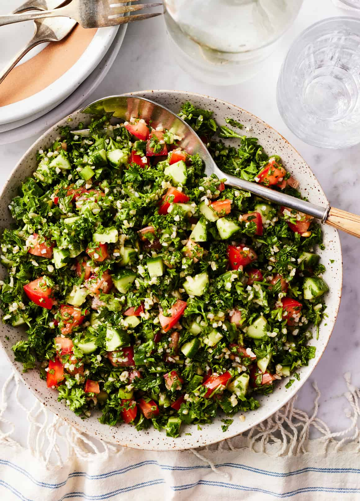

Tabbouleh

Description
Tabbouleh is a refreshing Middle Eastern salad made from bulgur wheat, fresh herbs, and
vegetables, tossed in a zesty dressing of olive oil and lemon juice. This salad is light,
flavorful, and packed with nutrients, making it a perfect side dish or light meal. Tabbouleh
is traditionally served cold and is a staple in Lebanese cuisine, often enjoyed as part of a
mezze spread or alongside grilled meats and kebabs.
Ingredients
- 1 cup bulgur wheat
- 2 cups boiling water
- 1 cup chopped fresh parsley
- 1/2 cup chopped fresh mint
- 2 tomatoes, diced
- 1 cucumber, diced
- 4 green onions, thinly sliced
- 1/4 cup lemon juice
- 1/4 cup olive oil
- Salt and black pepper to taste
Steps
- In a heatproof bowl, pour the boiling water over the bulgur wheat and let it soak for about 30 minutes,
or until the bulgur is tender and has absorbed all the water.
- Fluff the bulgur with a fork and transfer it to a large mixing bowl.
- Add the chopped parsley, chopped mint, diced tomatoes, diced cucumber, and sliced green onions to the bowl with the bulgur.
- In a small bowl, whisk together the lemon juice, olive oil, salt, and black pepper to make the dressing.
- Pour the dressing over the tabbouleh salad and toss everything together until well combined.
- Adjust the seasoning to taste, adding more salt, pepper, or lemon juice if desired.
- Chill the tabbouleh in the refrigerator for at least 30 minutes before serving to allow the flavors to meld.
- Serve the tabbouleh cold as a side dish or light meal, garnished with additional fresh herbs if desired.